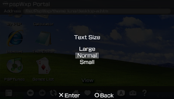

Browser settings
This is the optimal PSP Browser configurations for pspwvista runs OK.
|  |
| This is important. If you don´t adjust this to Normal, you will have problems for view pspwvista correctly. |
| If you enable Conserve Memory function, when the browser hasn´t memory (not enough memory), it restarts pspwvista. |
Tip
If you hava an OE version, for increase speed of pspwvista, set XMB CPU speed at 333 Mhz.
Related tasks
| Configure your PSP WiFi conection | |
| Official requeriments for use pspwvista |